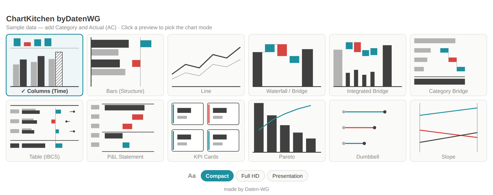
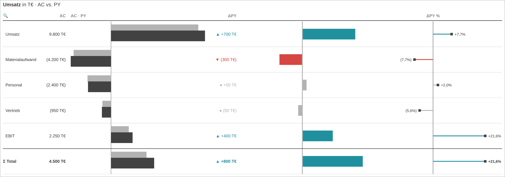
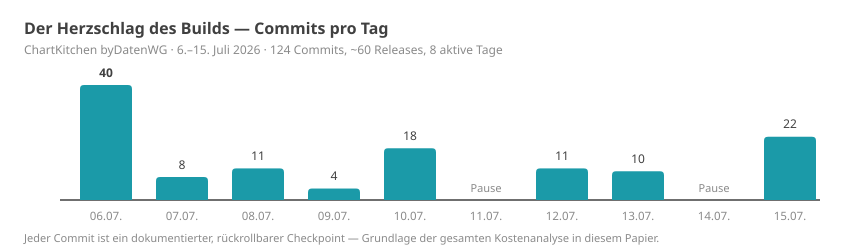
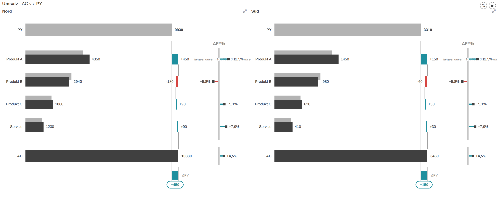
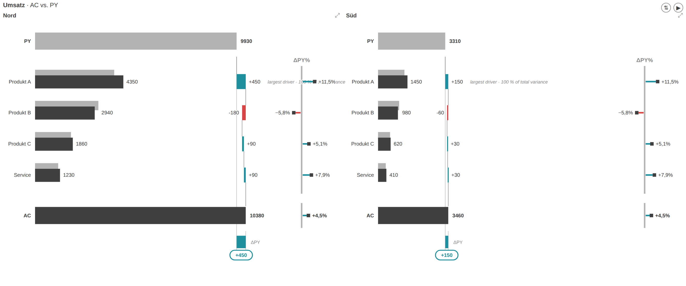
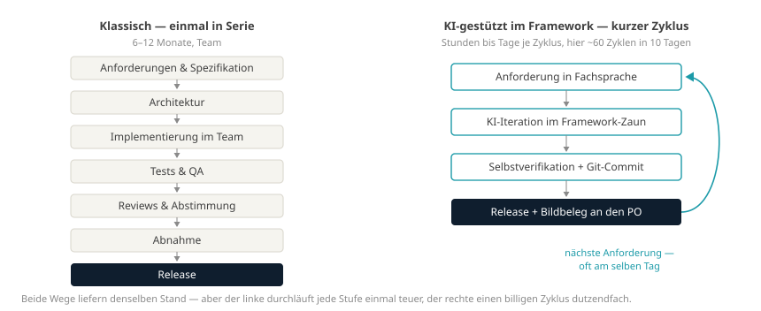
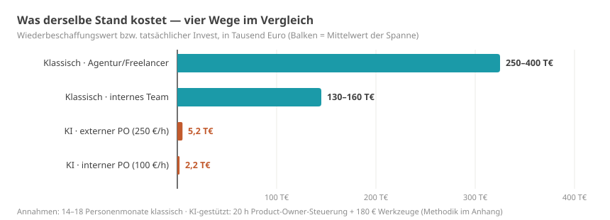
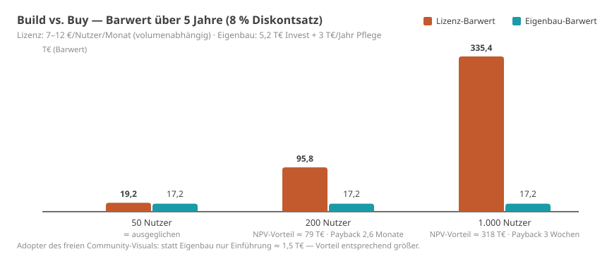

Management Summary
Die Hauptthese M: Unter fünf Randbedingungen — festes Framework, Domänenexpertise in der Steuerung, kleine Iterationen, schnelle lokale Verifikation, konsequente Versionskontrolle — steigt die Produktivität KI-gestützter Entwicklung nicht um Prozente, sondern um Größenordnungen. Die Formel lautet nicht „KI schafft das", sondern KI × Framework × Domänenexpertise × Versionskontrolle. Dieses Papier belegt das an einem vollständig dokumentierten Fall und liefert das Bewertungsmodell dazu. Die eigentliche Innovation ist dabei nicht die KI selbst, sondern ihre ökonomische Konsequenz: Sie verändert die Kostenstruktur der Software-Entwicklung — und zwingt damit die Build-vs.-Buy-Logik zur Neubewertung.
Evidenz-Kennzeichnung in diesem Papier: M gemessen · A Annahme · S Schätzung/Modellrechnung · H Hypothese — Details unter „Begriffe & Prämissen".
Worum es geht. Dieses Papier schlägt ein Bewertungsmodell für KI-gestützte Software-Entwicklung vor und rechnet es an einer vollständig dokumentierten Fallstudie durch: Ein einzelner Controlling-Experte — kein Entwicklerteam — hat in zehn Kalendertagen ein Berichts-Werkzeug für Microsoft Power BI bis zu einem marktfähigen Entwicklungsstand gebaut. Derselbe Stand wird — nach drei anerkannten Schätzverfahren — klassisch auf 14–18 Personenmonate und 150.000–350.000 € taxiert S. Fallstudie, Historie und Methodik sind vollständig öffentlich M.
Was es tatsächlich gekostet hat. Rund 20 Stunden dokumentierte Steuerungszeit des Fachexperten (Sitzungsprotokolle; Denk- und Recherchezeit außerhalb der Sitzungen ist nicht erfasst — die Sensitivitätsrechnung in Kapitel 4 rechnet deshalb bis 120 Stunden durch) plus etwa 180 € Werkzeugkosten. Je nach Stundensatz (250 €/h extern, 100 €/h intern) liegt der Invest bei ~5.200 € bzw. ~2.200 € — ein Kostenhebel von 29 bis 161 gegenüber dem Wiederbeschaffungswert. Wichtig zur Einordnung: Dieser Vergleich stellt den erreichten Ist-Stand einem klassischen Vollprozess gegenüber und ist insoweit asymmetrisch — eine symmetrische Gegenrechnung (Kapitel 4) drückt den Hebel auf 13 bis 93, ändert die Größenordnung der Aussage aber nicht. Bewusst sprechen wir vom Kostenhebel (Cost Avoidance), nicht von „ROI": Ein ROI setzt realisierte Erträge voraus; hier werden vermiedene Wiederbeschaffungskosten ins Verhältnis zum Invest gesetzt (Begriffe & Prämissen).
Warum das mehr als eine Anekdote ist. Das Ergebnis beruht nicht auf Glück, sondern auf drei reproduzierbaren Bedingungen: einem festen Software-Framework mit klaren Regeln (Kapitel 7), einem Fachexperten, der präzise formulieren kann, was gebaut werden soll, und disziplinierter Versionskontrolle, die jeden Schritt prüfbar und rückgängig machbar hält (Kapitel 8). Wo diese Bedingungen vorliegen, ist das Muster übertragbar — und dann geraten etablierte Kalküle unter Druck: die Build-oder-Buy-Entscheidung, die Verhandlungsposition in Lizenzgesprächen und die Preissetzungsmacht von Software-Anbietern. Zugleich gilt: Die Evidenzbasis ist eine einzelne Fallstudie. Was am Fall gemessen ist und was daraus abgeleitete Hypothese über mögliche Marktwirkungen ist, wird im Papier durchgängig getrennt ausgewiesen.
Für wen das relevant ist. CFOs und Controlling-Leitungen (Lizenzkosten, Verhandlungsposition), IT- und BI-Verantwortliche (was intern machbar wird, Governance in Kapitel 9), Software-Anbieter (wo ihr Geschäftsmodell unter Druck geraten könnte) und Beratungen (wohin der Wert wandert). Kapitel 12 fasst die Handlungsoptionen je Rolle zusammen.
| Kernergebnis | Wert | Evidenz |
|---|---|---|
| Tatsächlicher Invest (externer Experte, 250 €/h) | ~5.200 € | M · A |
| Tatsächlicher Invest (interner Experte, 100 €/h) | ~2.200 € | M · A |
| Klassischer Wiederbeschaffungswert (3 Verfahren, Anhang B) | 150.000–350.000 € | S |
| Kostenhebel, Ist-Stand-Vergleich | 29–67× (extern) · 69–161× (intern) | S |
| Kostenhebel symmetrisch (gleicher Leistungsumfang, Kapitel 4) | 13–39× (extern) · 31–93× (intern) | S |
| Kalenderzeit: 10 Tage | statt geschätzt 6–12 Monaten klassisch | M · S |
Die fünf Kernthesen:
- KI × Framework × Domänenexpertise — nicht KI allein: Feste Frameworks mit definierten Schnittstellen, Sandbox und Zertifizierungsregeln reduzieren die Freiheitsgrade so weit, dass KI-Entwicklung kontrollierbar und reproduzierbar wird. Das ist die zentrale These dieses Papiers (Kapitel 7). M
- Git ist das unterschätzte Fundament: Ohne Versionskontrolle wird KI-Iterationsgeschwindigkeit zur Haftung. Mit ihr wird jeder Schritt rückrollbar, prüfbar — und die gesamte Analyse dieses Papiers erst möglich (Kapitel 8). M
- Die Build-oder-Buy-Rechnung verschiebt sich für Framework-Software: Nach Barwert schlägt der Eigenbau (oder die Adoption eines freien Community-Builds) das Lizenzmodell ab mittlerer Nutzerzahl deutlich — eine Rechnung unter offengelegten Annahmen (Kapitel 5). S
- Verhandlungsmacht-Hypothese: Ein glaubwürdiges freies Werkzeug könnte Lizenzverhandlungen zu Gunsten des Kunden verschieben, ohne dass gewechselt werden muss (Kapitel 6). H
- Markt-Hypothese: Open Source und KI könnten sich wechselseitig verstärken — KI macht Community-Software pflegbar, offener Code macht KI präzise — und den Entwicklungskosten-Vorsprung kommerzieller Anbieter verringern (Kapitel 10). H
Zum Evidenzstatus der Thesen: These 1 und 2 sind am Fall direkt belegt. These 3 ist eine Rechnung unter offengelegten Annahmen. These 4 und 5 extrapolieren vom Einzelfall auf Markt-Ebene — sie sind als begründete Hypothesen über mögliche Auswirkungen zu lesen, nicht als nachgewiesene Effekte (Einordnung in Kapitel 6, 10 und 11).
Begriffe & Prämissen — was Sie zum Lesen brauchen
Dieses Papier richtet sich ausdrücklich auch an Leserinnen und Leser ohne Entwicklungs-Hintergrund. Acht Begriffe genügen:
| Begriff | Bedeutung in diesem Papier |
|---|---|
| Power-BI-Custom-Visual | Ein Zusatzmodul für Microsofts Berichts-Plattform Power BI, das eigene Diagramm- und Tabellentypen nachrüstet — vergleichbar einer App auf einem Smartphone: läuft nur innerhalb der Plattform, nach deren Regeln. |
| IBCS | International Business Communication Standards — ein verbreiteter Notationsstandard für Geschäftsberichte (einheitliche Szenario-Muster, Varianzdarstellungen, „weniger Deko, mehr Aussage"). |
| KI-gestützte Entwicklung („Vibe Coding") | Ein Mensch beschreibt in normaler Sprache, was die Software können soll; ein KI-Agent schreibt, testet und dokumentiert den Code. Der Mensch prüft Ergebnisse und steuert nach — er tippt keinen Code. |
| Product Owner (PO) | Die steuernde Fachperson: formuliert Anforderungen, beurteilt Ergebnisse, entscheidet Prioritäten. Hier: ein Controlling-/BI-Experte ohne Entwicklerteam. |
| Open Source (Apache 2.0) | Der Quellcode ist öffentlich und darf kostenlos genutzt, geprüft und verändert werden. Die Lizenz Apache 2.0 erlaubt auch kommerziellen Einsatz. |
| Git / Versionskontrolle | Ein Protokollsystem, das jeden Änderungsschritt („Commit") dauerhaft festhält und rückgängig machbar hält — das Logbuch und Sicherheitsnetz der Software-Entwicklung. |
| Kostenhebel (Cost Avoidance) | Verhältnis der vermiedenen Kosten (Wiederbeschaffungswert) zum tatsächlichen Invest. „29×" heißt: Der Wiederbeschaffungswert entspricht dem 29-Fachen des Invests. Bewusst nicht „ROI" genannt — ein ROI setzt realisierte Erträge voraus, hier werden vermiedene Ausgaben verglichen. |
| Barwert (DCF) | Zukünftige Zahlungen (z. B. fünf Jahre Lizenzgebühren), mit einem Zinssatz auf heute abgezinst — die betriebswirtschaftlich korrekte Basis für Build-vs-Buy-Vergleiche. |
Evidenz-Kennzeichnung: Größere Aussagen tragen in diesem Papier ein Kürzel: M = gemessen — aus Git-Historie, Sitzungsprotokollen oder Rechnungen. A = Annahme — gesetzt und begründet, z. B. Stundensätze. S = Schätzung oder Modellrechnung — aus M und A abgeleitet, z. B. Wiederbeschaffungswert, Kostenhebel, Barwerte. H = Hypothese — Extrapolation über den Einzelfall hinaus. Die Kürzel machen auf einen Blick sichtbar, worauf jede Aussage steht.
Die Prämissen der Rechnung — vorab in aller Klarheit:
- Die Fallstudie ist exemplarisch. Belegt wird jede Zahl an einem konkreten Projekt — einem Power-BI-Custom-Visual für Controlling-Berichte. Das Muster gilt aber für eine ganze Klasse von Software: alles, was innerhalb eines festen Frameworks mit definierten Schnittstellen lebt (Office-Add-ins, IDE-Extensions, Plattform-Plugins, interne Fachwerkzeuge). Wer „Visual" liest, darf „unser Werkzeug X" denken.
- Die Projektzahlen sind Messwerte, keine Schätzungen: Kalendertage, Commits, Releases und Code-Umfang stammen aus der öffentlichen Git-Historie; Token- und Werkzeugkosten aus dem Session-Protokoll und Rechnungen (Anhang A).
- Die Stundensätze sind Annahmen: 250 €/h für einen erfahrenen externen Berater (Marktsatz), 100 €/h interner Vollkostensatz. Beide Rechnungen werden durchgängig nebeneinander geführt.
- Die klassischen Vergleichskosten sind eine Schätzung — bottom-up in Personenmonaten, bewusst als breite Spanne (150–350 T€), ohne eingeholte Angebote. Die Kernaussagen überleben auch das untere Ende der Spanne.
- Der Lizenzvergleich nutzt öffentliche Preisindikationen kommerzieller IBCS-Visual-Suiten (7–12 €/Nutzer/Monat), über 5 Jahre mit 8 % abgezinst.
- Der Evidenzstand ist eine Fallstudie (n = 1). Kapitel 1–5 beruhen auf Messwerten und offengelegten Rechnungen zu diesem einen Projekt. Kapitel 6, 10 und Teile von 12 leiten daraus Hypothesen über mögliche Markt- und Verhandlungseffekte ab — sie sind konditional formuliert und wären erst durch weitere, unabhängige Fälle zu erhärten.
- Der Basisvergleich ist bewusst als Ist-Stand-Vergleich gerechnet — der klassische Prozess mit vollem Overhead (Doku, QA, Abnahme, Projektmanagement), der KI-Build im erreichten Stand ohne diese Anteile. Diese Asymmetrie wird nicht nur benannt, sondern in Kapitel 4 symmetrisch gegengerechnet.
- Interessenlage: Die Daten-WG ist Herausgeberin des beschriebenen Visuals und berät im Power-BI-Umfeld. Deshalb ist die Methodik offengelegt und jede Zahl nachrechenbar — das Papier argumentiert mit Belegen, nicht mit Autorität.
Leseführung: Kapitel 1–5 enthalten den belegten Fall und die Rechnungen (Kosten, Kostenhebel, Barwert). Kapitel 6–9 ordnen ein: Verhandlungsmacht, warum Framework und Git die Risiken zähmen, Governance und Wartbarkeit. Kapitel 10 formuliert die Markt-Hypothesen, Kapitel 11–12 klären Übertragbarkeit, Grenzen und Handlungsoptionen. Anhang A dokumentiert die Methodik; Anhang B rechnet die Bewertungen nach anerkannten Verfahren vor (COCOMO II, Function Points, DCF, Lizenzpreisanalogie) und ordnet den Fall in die Produktivitäts-Literatur ein; ein Quellenverzeichnis schließt das Papier.
1 · Der Fall: Was gebaut wurde
ChartKitchen byDatenWG ist ein natives Power-BI-Custom-Visual (TypeScript/SVG, API 5.11.0, keine externen Laufzeit-Abhängigkeiten) für Controlling-Berichte in IBCS-inspirierter Notation — quelloffen (Apache 2.0) und kostenlos.
| Umfang (Stand 15.07.2026, v1.34.1.0) | Wert |
|---|---|
| Chart-Modi | 12 (Säulen, Balken, Linie, Wasserfall, integrierte Brücke, Kategorie-Brücke, Tabelle/Matrix, GuV-Statement, KPI-Karten, Pareto, Dumbbell, Slope) |
| Kern-Code | ~10.200 Zeilen |
| Tabelle/Matrix | N-Ebenen-Hierarchie, Scrolling mit fixiertem Header + Σ, Formelzeilen, klappbare Spaltenhierarchie, Suche, Sortierung |
| Lokalisierung | de, en, es, ja — je ~245 Oberflächen-Strings |
| Qualitätssicherung | 80+ Headless-Render-Tests, Microsoft-Lint-Regeln, npm audit 0 Findings |
| Distribution | baubarer Quellcode-Export, AppSource-Einreichungspaket, Marken-/Rechtsprüfung |

Abb. 1 — Die Modus-Galerie des Visuals: 12 klickbare Vorschauen, Schrift-Presets, mehrsprachig.
Abb. 2 — Controlling-Tabelle: integrierte Balken, Δ- und Δ%-Spalten, Finanzkonvention (negative Werte in Klammern), Trend-Icons ▲▼● an Materialitätsschwellen.2 · Zeit, Kosten und Arbeitsweise — die tatsächlichen
Die Git-Historie erlaubt eine ehrliche Abgrenzung: erster Commit des Visuals am 6. Juli 2026, der beschriebene Stand am 15. Juli 2026.

Abb. 3 — 124 Commits, ~60 Releases in 10 Kalendertagen (8 aktive Tage).| Kennzahl | Wert |
|---|---|
| Dokumentierte Steuerungszeit des PO (Sitzungsprotokolle: Anforderungen, Tests, Feedback) | ~20 h |
| Werkzeugkosten (KI-Abo ~100 $ + 80 € Zusatzbudget) | ~180 € |
| Verarbeitete Tokens | ~1,8 Mrd. (96 % Cache-Lesevorgänge) |
| API-Listenpreis-Äquivalent der Rechenleistung | ~2.900 $ (durch Pauschal-Abo abgedeckt) |
| CO₂-Fußabdruck (Methodik: Daten-WG-KI-CO₂-Simulator, mittleres Szenario) | ~0,2–1,1 t CO₂e ≈ ein Inlandsflug |
Zur Steuerungszeit eine wichtige Präzisierung: ~20 h ist die dokumentierte Zeit aus den Sitzungsprotokollen. Nicht erfasst sind Nachdenken, Recherche und Ideensammlung außerhalb der Sitzungen — sie lassen sich ehrlicherweise nicht messen. Deshalb rechnet Kapitel 4 die Sensitivität bis zur sechsfachen Stundenzahl durch.
Anatomie einer typischen Iteration — vom Satz zum Release am selben Tag: Der Product Owner meldet morgens per Screenshot: „Bei Small Multiples skalieren die Brücken jede Kachel für sich — das sollte optional eine gemeinsame Skala können." Nachmittags ist die Option gebaut, getestet, lokalisiert und als Release verteilt:

Abb. 4a — Vorher: Region „Süd" (⅓ des Volumens von „Nord") füllt ihre Kachel genauso aus.
Abb. 4b — Nachher (gleicher Tag): optionale gemeinsame Skala — „Süd" ist sichtbar ein Drittel, inklusive der Δ%-Pin-Skalen.Gesamtinvest, zwei Bewertungen:
- Externer Product Owner (erfahrener Berater, 250 €/h): 20 h × 250 € + 180 € = ~5.200 €
- Interner Product Owner (Controller/BI-Verantwortlicher, 100 €/h Vollkosten): 20 h × 100 € + 180 € = ~2.200 €
Bemerkenswert an beiden Rechnungen: Werkzeugkosten sind 3–8 % des Invests — über 90 % ist Expertenzeit. Der Engpass ist nicht mehr das Entwicklungsbudget, sondern die Person, die weiß, was gebaut werden soll.
3 · Was derselbe Stand klassisch gekostet hätte
Bevor gerechnet wird, lohnt der Blick auf die Prozesse selbst — hier entsteht der Kostenunterschied, nicht bei den Stundensätzen:

Abb. 5 — Warum die Kosten unterschiedlich entstehen: Der klassische Prozess durchläuft alle Stufen einmal in Serie; der KI-gestützte Loop durchläuft einen kurzen Zyklus dutzendfach — hier ~60-mal in zehn Tagen. MBottom-up geschätzt in Personenmonaten (PM) Entwicklung:
| Block | PM |
|---|---|
| Grundgerüst, Build-Pipeline, Settings-Modell | 0,5–1 |
| Säulen/Balken/Linie inkl. Varianz-Panels, Skalen-Sync, YTD | 2–3 |
| Wasserfall + zwei Brücken-Modi | 1–1,5 |
| Tabelle/Matrix (Hierarchie, Scroll-Freeze, Formeln, Matrix-Ausbau) | 2,5–4 |
| KPI-Karten inkl. Bullet/Benchmark | 0,75–1 |
| Small Multiples (Σ-Kachel, Top-N, Zoom, gemeinsame Skalen) | 0,75–1 |
| Landing, In-Chart-Interaktionen, Persistierung/Bookmarks | 0,5–1 |
| Lokalisierung, Barrierefreiheit, Kontrastmodus | 0,5 |
| Test-Harness + Testfälle | 0,75–1 |
| Zertifizierungsvorbereitung, Lizenz/Marken, AppSource-Kit | 0,5–1 |
| Entwicklung | 10–14 PM |
| + Projektrealität (Spezifikation, Reviews, Abstimmung, QA) | 14–18 PM |
Bewertet zu Marktsätzen: intern ~130–160 T€ (Senior-Vollkosten 9 T€/PM, sofern Entwickler mit Power-BI-Visual- und Controlling-Erfahrung verfügbar sind), extern ~250–400 T€ (900–1.200 €/Tag). Wir rechnen konservativ mit der Spanne 150–350 T€. S Eine unabhängige Gegenrechnung mit zwei anerkannten Schätzverfahren (COCOMO II, Function Points) bestätigt die Spanne — Rechenwege in Anhang B.
Offen benannt: Dieser Vergleich ist asymmetrisch. Die klassische Seite enthält den vollen Prozess-Overhead (Spezifikation, Reviews, QA, Abnahmetests, Endnutzer-Doku, Projektmanagement); der KI-Build enthält Endnutzer-Doku, formale Abnahmetests und eine vollständige externe Review-Runde noch nicht (Kapitel 11). Wer nur den Ist-Stand vergleicht, verschafft der KI-Seite also einen systematischen Vorteil. Deshalb wird der Kostenhebel in Kapitel 4 zusätzlich symmetrisch gerechnet — mit beiden möglichen Korrekturen (KI-Seite auf Vollumfang hochgerechnet bzw. klassische Seite um die fehlenden Anteile gekürzt).

Abb. 6 — Vier Wege zum selben Stand. Die KI-gestützten Balken sind auf dieser Skala kaum sichtbar — das ist die Aussage.4 · Der Kostenhebel — bewusst kein „ROI"
Vorab die Begriffsklärung, die ein kritischer Leser zu Recht einfordert: Die folgende Kennzahl ist kein ROI. Ein Return on Investment setzt realisierte Erträge voraus; hier wird der tatsächliche Invest ins Verhältnis zu vermiedenen Wiederbeschaffungskosten gesetzt (Cost Avoidance). Wir nennen die Kennzahl deshalb durchgängig Kostenhebel: „29×" heißt, der Wiederbeschaffungswert entspricht dem 29-Fachen des Invests — nicht, dass 29-fache Erträge geflossen sind. Realisiert wird der Wert erst über Nutzung, Reichweite und vermiedene Lizenzkosten (Kapitel 5). Wer eine klassische Bezeichnung braucht: ein Wert-/Investitionsfaktor auf Basis des geschätzten Wiederbeschaffungswerts. S
| Kostenhebel | Externer PO (5.200 €) | Interner PO (2.200 €) |
|---|---|---|
| vs. 150 T€ (konservativ) | 29× | 69× |
| vs. 250 T€ (mittel) | 48× | 115× |
| vs. 350 T€ (extern) | 67× | 161× |
Effektiver Stundenwert der 20 dokumentierten Steuerungsstunden: 7.500–17.500 € — Hebel 30–70 auf den externen Beratersatz, 75–175 auf den internen. Pro Release: ~85 € (extern) bzw. ~37 € (intern). Pro Zeile Code: ~0,20–0,50 € — klassisch liegt eine produktive Zeile bei 15–35 €.
Zwei Einordnungen: Der wichtigere Punkt als jede Kennzahl ist, dass ein Werkzeug überhaupt entsteht, das nie ein 250-T€-Budget bekommen hätte. Und: Der Hebel gehört zur Kombination „Fachexperte + Werkzeug". KI ersetzt hier das Entwicklerteam — nicht den Product Owner.
Sensitivität: Was, wenn es mehr Stunden waren?
Die 20 h sind dokumentierte Sitzungszeit (Kapitel 2) — undokumentierte Denk- und Recherchezeit kommt realistisch hinzu. Die Rechnung bricht dadurch nicht:
| Steuerungszeit | Invest extern | Hebel vs. 150–350 T€ | Invest intern | Hebel vs. 150–350 T€ |
|---|---|---|---|---|
| 20 h (dokumentiert) | 5,2 T€ | 29–67× | 2,2 T€ | 69–161× |
| 40 h | 10,2 T€ | 15–34× | 4,2 T€ | 36–84× |
| 80 h | 20,2 T€ | 7–17× | 8,2 T€ | 18–43× |
| 120 h | 30,2 T€ | 5–12× | 12,2 T€ | 12–29× |
Selbst bei Versechsfachung der Stunden bleibt ein Hebel von mindestens 5 (extern) bzw. 12 (intern). Die Aussage hängt nicht an der Präzision der Stundenerfassung.
Symmetrie-Check: Kostenhebel mit vergleichbarem Leistungsumfang
Die Tabelle oben vergleicht Ist-Stand gegen Vollprozess (Prämisse 7). Zwei Korrekturen stellen Symmetrie her:
Weg A — KI-Seite auf Vollumfang hochrechnen. Endnutzer-Doku, formale Abnahmetests und eine externe Review-Runde sind mit derselben Methode schätzungsweise weitere 15–25 PO-Stunden plus ~100 € Werkzeugkosten (Erfahrungswert aus den bisherigen Doku- und Testpaketen des Projekts — eine Schätzung, keine Messung):
| Externer PO | Interner PO | |
|---|---|---|
| Invest bei Vollumfang | ~9,0–11,5 T€ | ~3,8–4,8 T€ |
| Hebel vs. 150–350 T€ | 13–39× | 31–93× |
Weg B — klassische Seite um die fehlenden Anteile kürzen (−10–20 %, Kapitel 3): Vergleichswert 120–315 T€ gegen den Ist-Stand-Invest:
| Externer PO (5,2 T€) | Interner PO (2,2 T€) | |
|---|---|---|
| Hebel vs. 120–315 T€ | 23–61× | 55–144× |
Was sich dadurch ändert — und was nicht: Die Schlagzeilen-Werte 29–161× gelten nur für den Ist-Stand-Vergleich. Symmetrisch gerechnet liegt der Hebel je nach Weg und Besetzung bei 13–144× — im ungünstigsten Szenario (externer Satz, Vollumfang, konservativer Vergleichswert) bleibt ein Faktor 13. Die Kernaussage übersteht die Korrektur; die Einzelwerte sollten aber stets mit dieser Einordnung zitiert werden. Nicht hochrechenbar ist schließlich der Abstimmungsaufwand echter Multi-Stakeholder-Organisationen: Dieses Projekt wurde von einer Person entschieden — in einer Organisation mit Gremien und Freigaben kämen PO-Stunden hinzu, die den Faktor weiter drücken (Kapitel 11).
5 · Build vs. Buy im Barwertvergleich
Kommerzielle Visual-Suiten kosten grob 7–12 € pro Nutzer und Monat. Diskontiert über 5 Jahre (8 %, Annuitätenfaktor 3,99), gegen Eigenbau mit 5,2 T€ Invest und angenommenen 3 T€/Jahr Pflege:

Abb. 7 — Ab ~150–200 Report-Nutzern ist der Eigenbau nach Barwert klar überlegen.| Unternehmensgröße | Lizenz-Barwert (5 J) | Eigenbau-Barwert | NPV-Vorteil |
|---|---|---|---|
| 50 Nutzer × 8 €/M | 19.200 € | 17.200 € | ~2.000 € |
| 200 Nutzer × 10 €/M | 95.800 € | 17.200 € | ~78.600 € |
| 1.000 Nutzer × 7 €/M | 335.400 € | 17.200 € | ~318.000 € |
Payback: 2,6 Monate (200 Nutzer), ~3 Wochen (Konzern). Sensitivität: Selbst bei verdreifachter Pflege (10 T€/Jahr) bleibt der Mittelstandsfall ~50 T€ im Plus. Die vollständige Jahr-für-Jahr-Rechnung samt Zins- und Pflege-Sensitivitäten steht in Anhang B. S
Die Adopter-Perspektive verschärft das Bild: Wer das freie Community-Visual einsetzt statt selbst zu bauen, trägt nur die Einführung (~2 Controller-Tage ≈ 1,5 T€) gegen 19–335 T€ Lizenz-Barwert. Für kleine Unternehmen — deren reale Alternative oft „keine IBCS-Visuals" ist — ist das keine Ersparnis, sondern Zugang zu einer Fähigkeit, die es in ihrer Preisklasse nicht gab.
Fairness: Der Vergleich gilt, wo der Funktionsumfang genügt. Kommerzielle Anbieter verkaufen zusätzlich Reife, SLAs, Zertifizierung, Roadmap. Diese Lücke adressiert im Community-Modell ein Support-Abo (Kapitel 10).
6 · Die spieltheoretische Dimension
Ein oft übersehener Wert eines glaubwürdigen freien Werkzeugs realisiert sich, ohne dass es eingesetzt wird: Es verändert die Verhandlungsposition (BATNA) gegenüber kommerziellen Anbietern. Vorab zur Einordnung: Das Folgende ist eine modellhafte Überlegung nach Verhandlungslogik — belegt durch keine beobachteten Abschlüsse; die genannten Beträge sind mögliche Effekte, keine zugesagten Nachlässe. H
- Bisher lautete die Alternative in Lizenzverhandlungen: „zahlen oder verzichten". Mit einer glaubwürdigen freien Option genügt die Möglichkeit des Wechsels: Beim 1.000-Nutzer-Konzern entsprechen 10–20 % Renewal-Nachlass 33–67 T€ Barwert — allein durch die Existenz der Alternative im Beschaffungsvergleich.
- Glaubwürdigkeit ist die Währung: offener, baubarer Quellcode ✓, sichtbare Pflege (60 Releases in 10 Tagen) ✓, Zertifizierung und Doku als nächste Schritte. Der billigste glaubwürdige Zug eines Konzerns: ein Pilot auf einer einzigen Berichtsseite.
- Grenzen: Ohne Zertifizierung bleibt die Karte in vielen Häusern formal unspielbar; große Berichtsbestände (Wechselkosten) stumpfen sie ab. Am schärfsten ist sie bei Neueinführungen und auslaufenden Rahmenverträgen.
7 · Warum das feste Framework der halbe Erfolg ist
Dieses Kapitel enthält die zentrale These des Papiers — sie ist wissenschaftlich interessanter als jeder Kostenfaktor: Feste Frameworks reduzieren die Freiheitsgrade der Entwicklung so stark, dass KI-Arbeit kontrollierbar und reproduzierbar wird. Die Wirkungskette lautet: Framework → Sandbox → kleine Iterationen → lokale Verifikation → Git → kontrollierbares Risiko. Absolute Produktivitätsfaktoren werden sich mit jeder Modellgeneration ändern; dieser Mechanismus nicht.
Die verbreitete Sorge gegenüber KI-generiertem Code — „schnell, aber unsicher und fehlerhaft" — unterschätzt, wie stark ein festes Framework die Risikoflächen beschneidet. Fünf Mechanismen greifen ineinander, alle am Fall belegt M:
Mechanismus 1 — Suchraumreduktion. Ein Power-BI-Visual lebt in einem
vordefinierten Vertrag: eine update()-Schnittstelle, deklarative
Capabilities, ein Settings-Modell. Es gibt keine selbstgebaute Netzwerk-,
Persistenz- oder Threading-Schicht, in der sich KI-Fehler verstecken
könnten — die fehleranfälligsten Schichten klassischer Projekte
existieren gar nicht erst. Für die KI heißt das: Der Lösungsraum je
Anforderung ist klein, die Varianz zwischen zwei Anläufen gering — genau
das macht Ergebnisse reproduzierbar statt zufällig.
Mechanismus 2 — Deterministische Schnittstellen. Jede Anforderung übersetzt sich mechanisch in „welche Option, welcher Renderer, welche Persistierung" — keine Architektur-Grundsatzfragen, deren Fehlentscheidung erst Monate später sichtbar wird. Entwicklung wird zur Folge kleiner, entscheidbarer Schritte; Konvergenz ist der Normalfall, nicht der Glücksfall.
Mechanismus 3 — Sandbox als Schadensdeckel. Das Visual läuft in einem
isolierten iframe, ohne Netzwerkzugriff, ohne Dateisystem, ohne
Speicher-APIs. Die Microsoft-Zertifizierungsregeln verbieten zusätzlich
eval, innerHTML, externes Nachladen — Regeln, gegen die automatisiert
geprüft wird (projektweit eingehalten, npm audit: 0 Findings). Der
maximale Schadensradius eines KI-Fehlers ist strukturell gedeckelt: Er
kann ein Chart falsch zeichnen, aber keine Daten exfiltrieren.
Mechanismus 4 — Kleine Iterationen. 124 Commits für ~60 Releases: Die durchschnittliche Änderung ist klein genug, um per Diff gelesen, verstanden und notfalls verworfen zu werden. Experimente werden billig, weil Rückwege garantiert sind (Kapitel 8) — das senkt die Kosten jeder einzelnen Fehlentscheidung auf Minuten.
Mechanismus 5 — Lokale Verifikation in Minuten. Der Headless-Harness rendert jeden Stand als Bild; Fehler sind sichtbar statt latent, 80+ Testfälle mit bekannten Erwartungswerten sichern die Fachlogik. Der Feedback-Loop schließt sich lokal in Minuten — ohne Deployment, ohne Testumgebung, ohne Wartezeit.
Als Designregel formuliert: Wirkt KI-Entwicklung unkontrollierbar, ist der erste Hebel nicht das bessere Modell, sondern der engere Zaun.
Die Verallgemeinerung: Dieses Risikoprofil haben alle Framework-Ökosysteme mit Sandbox und Zertifizierung — Office-Add-ins, Browser-Extensions, App-Store-Apps, dbt-Pakete. Dort ist „Vibe Coding" nicht trotz, sondern wegen der Einschränkungen produktionstauglich. Greenfield-Systeme ohne Zaun haben dieses Sicherheitsnetz nicht — dort gelten andere Maßstäbe (Kapitel 11).
8 · Git: das unterschätzte Fundament
Die unbequeme Wahrheit zuerst: Ohne Versionskontrolle ist Vibe Coding Müll. Eine KI, die pro Tag dutzende Änderungen produziert, ist ohne Rücksprungpunkte kein Beschleuniger, sondern ein unkontrollierbares Risiko — jede fehlgeschlagene Iteration kontaminiert den Stand, niemand weiß mehr, was wann warum geändert wurde. Mit Git kehrt sich das um; vier Mechanismen haben diesen Build getragen:
1. Checkpoints & Rollback. Jeder Arbeitsschritt endet in einem Commit
(im Setup sogar erzwungen: ohne Commit + Push endet keine Arbeitssitzung).
Reales Beispiel aus dem Projekt: Ein Design-Experiment — ein Wortmarken-Logo
auf der Startseite — gefiel dem Product Owner nicht. Ein git revert,
Release als 1.30.4.0, fünf Minuten, kein Schaden:
2. Kleine Commits als Review-Fläche. 124 Commits für 60 Releases heißt: Die durchschnittliche Änderung ist klein genug, um per Diff gelesen zu werden. Das ist die realistische Antwort auf „wer reviewt den KI-Code?" — nicht Zeile für Zeile alles, sondern abgegrenzte Diffs mit beschreibenden Commit-Botschaften, stichprobenhaft tief geprüft.
3. Branch-Isolation. Die gesamte Entwicklung lief auf einem eigenen Branch — die KI kann nichts „kaputt machen", was nicht explizit zusammengeführt wird. Für Teams: KI-Arbeit ist damit organisatorisch genauso integrierbar wie die eines neuen Entwicklers, inklusive Pull-Request-Gate.
4. Historie als Beweismittel. Jede Zahl in diesem Papier — Kalendertage,
Commits pro Tag, Release-Frequenz, sogar die Abgrenzung „Visual vs.
Vorarbeiten" — stammt aus git log. Versionskontrolle macht KI-Entwicklung
auditierbar: Für Wirtschaftsprüfer, für IT-Compliance, für die eigene
Kostenrechnung. Ohne Git wäre dieses Papier Behauptung; mit Git ist es
nachrechenbar. Nach unserer Kenntnis gehört diese Historie zu den ersten
vollständig öffentlichen Entwicklungsprotokollen eines KI-gebauten
Produktionswerkzeugs — jeder der 124 Schritte ist einsehbar. Das ist kein
Nebenprodukt der Fallstudie, sondern ihr zentrales Qualitätsmerkmal.
Git als Governance-System. Für Organisationen ist Git damit mehr als ein Werkzeug — es ist die vorhandene Kontrollinfrastruktur für KI-Arbeit: Auditierbarkeit — jede Änderung ist Urheber, Zeitpunkt und Begründung zuordenbar, anschlussfähig an Wirtschaftsprüfung und IT-Compliance. Nachvollziehbarkeit — das „Warum" jeder Entscheidung steht in der Historie, nicht im Kopf einer Person. Reviewbarkeit — Pull-Request-Gates funktionieren für KI-Beiträge unverändert. Compliance-Anschluss — interne Kontrollsysteme docken an bestehende Git-Prozesse an; es braucht keine neue Infrastruktur, nur Disziplin in der bestehenden. M
Praktische Konsequenz für jedes KI-Entwicklungs-Setup: Commit-Pflicht pro Arbeitsschritt, aussagekräftige Botschaften, eigener Branch, Push als Teil der Definition-of-Done. Das kostet nichts und entscheidet über Produktionstauglichkeit.
9 · Governance, Wartbarkeit, Bus-Faktor — die Risiko-Fragen
Wer über den Einsatz dieses Musters entscheidet, fragt nicht nach Code, sondern nach Risiko. Die vier Fragen, die dabei regelmäßig zuerst kommen — und was dieser Fall auf sie antwortet:
Wer prüft KI-generierten Code? Drei Schichten, keine davon optional:
(1) Automatisierte Gates — Microsoft-Lint-Regeln, Zertifizierungs-Checks
(kein eval, kein innerHTML, kein Nachladen), npm audit; alle liefen
projektweit auf Null Findings. (2) Abgegrenzte Diffs — 124 Commits für
60 Releases bedeuten kleine, lesbare Änderungen mit beschreibenden
Botschaften; geprüft wird stichprobenhaft tief statt vollständig
oberflächlich (Kapitel 8). (3) Fachliche Abnahme am Ergebnis — der
Product Owner prüft jede Iteration am gerenderten Bild gegen fachliche
Regeln („Bestandsgrößen darf man nicht summieren"). Für Organisationen
heißt das: Der Review-Prozess für KI-Code existiert bereits — es ist der
Pull-Request-Prozess für menschlichen Code, mit strengeren automatischen
Gates.
Wie werden Halluzinationen abgefangen? Im Framework-Kontext äußert sich ein KI-Fehler nicht als plausible Falschbehauptung, sondern als falsch gezeichnetes Chart oder gebrochener Test — er ist sichtbar (Kapitel 7). Der Headless-Render-Harness erzeugt für jeden Stand Bildbelege; die fachliche Korrektheit prüft der Domänenexperte, nicht die KI selbst. Restrisiko bleibt bei subtilen Rechenfehlern, die optisch plausibel aussehen — dagegen stehen die 80+ Testfälle mit bekannten Erwartungswerten.
Wer wartet das in drei Jahren? Die ehrlichste Antwort: nicht zwingend dieselbe Person. Die Wartbarkeit hängt an drei Eigenschaften, die personenunabhängig sind: offener Quellcode (jeder Entwickler und jede künftige KI kann die Codebasis vollständig lesen), lückenlose Git-Historie mit beschreibenden Commits (das „Warum" jeder Entscheidung ist dokumentiert) und das Framework selbst (API-Updates von Microsoft sind der Haupt-Pflegetreiber und betreffen alle Visuals gleich). Die DCF-Rechnung (Kapitel 5) preist Pflege mit 3 T€/Jahr ein und bleibt bis 10 T€/Jahr robust — das entspricht 12–40 PO-Stunden jährlich mit derselben Methode.
Was passiert, wenn der Product Owner geht? Der klassische Bus-Faktor-1 ist hier in zwei Hälften geteilt: Das technische Wissen liegt vollständig im Repository (Code, Historie, Testfälle, maschinenlesbare Projekt-Doku) — es ist übertragbar, an Menschen wie an KI-Agenten. Das Steuerungs-Wissen — welche fachlichen Anforderungen als Nächstes zählen — bleibt personengebunden, wie bei jedem Fachverfahren. Empfehlung für den Organisationseinsatz: Anforderungen und Abnahme-Entscheidungen im Repository mitführen (hier geschehen: Backlog und Changelog sind öffentlich) und früh eine zweite Person in die Steuerung einbinden.
Grenzen der Qualitätsevidenz — offen benannt: Die vorliegenden Qualitätsbelege sind Prozess- und Prüfmetriken (Tests, Lint, Audit, Release-Historie). Es fehlen: formale Performance- und Speicher-Messungen, strukturiertes Nutzerfeedback in der Breite und die abgeschlossene Microsoft-Zertifizierung (eingereicht wird gerade; das Einreichungspaket ist Teil des Repos). Diese Lücken stehen im öffentlichen Backlog und gehören in jede seriöse Übernahme-Entscheidung (Kapitel 11).
10 · Die Marktthese: Open Source × KI wirkt multiplikativ
Einordnung — Reichweite dieses Kapitels: Ab hier verlässt das Papier den belegten Einzelfall. Die folgenden Aussagen sind Hypothesen über mögliche Marktwirkungen, abgeleitet aus einer Fallstudie (n = 1) und historischen Analogien. Sie beschreiben, was passieren könnte, wenn sich das Muster in weiteren Fällen bestätigt — nicht, was nachweislich passiert. Wer ausschließlich belegte Aussagen sucht, kann dieses Kapitel überspringen — Kapitel 1–9 stehen ohne es. H
Die Wirkungskette der Hypothese, Glied für Glied: KI senkt die Entwicklungskosten im gezäunten Anwendungs-Layer (am Fall belegt, Kapitel 2–4) → Funktions-Nachbau wird billig, der Preisaufschlag für Standard-Features verliert seine Grundlage → Open-Source-Alternativen werden dauerhaft pflegbar und damit erstmals glaubwürdig → der zahlungswürdige Rest verschiebt sich zu Support, Haftung und Integration → Anbieter passen Preise oder Geschäftsmodell an. Nur das erste Glied ist belegt; jedes weitere ist einzeln plausibel, aber unbewiesen. H
Zur Vorgeschichte: Einzeln waren beide Kräfte für Software-Vendoren beherrschbar: Open Source scheiterte im Anwendungs-Layer oft am Pflegeargument („wer wartet das?"); KI-Entwicklung allein blieb ohne offene Referenz-Codebasen auf Prototypen-Niveau. Unsere Beobachtung legt nahe, dass sie sich gegenseitig verstärken:
- KI macht Community-Software pflegbar — ein Ein-Personen-Projekt hat effektiv ein Entwicklerteam; „Bus-Faktor 1" bedeutet nicht mehr Stillstand.
- Offener Code macht KI präzise — jedes offene Projekt ist sofort erweiterbar, weil das Modell die Codebasis liest wie ein eingearbeiteter Entwickler.
Träfe das breit zu, geriete der klassische Schutzwall funktionsorientierter Software-Anbieter („Entwicklung ist teuer, wir haben sie bezahlt, ihr mietet sie") unter Druck. Am stärksten exponiert wären: Single-Product-Anbieter mit Funktions-Differenzierung und Sitzplatz-Preisen. Wenig betroffen: Plattformen (Microsoft gewinnt durch jedes gute Visual), Daten-/Netzwerk-Lock-in, Haftung als Kaufgrund.
Das historische Muster existiert: Open Source hat die Infrastruktur-Schicht konsolidiert (Linux, Postgres); überlebt hat das Red-Hat-Modell — Software frei, Erlöse aus Support und Verlässlichkeit. Unsere Erwartung: Dasselbe Modell erreicht jetzt den Anwendungs-Layer.
Gegenkräfte, ehrlich benannt: (1) Vendoren können ebenfalls KI-gestützt entwickeln — was fällt, ist ihr Preissetzungsspielraum gegen „gut genug und kostenlos", nicht ihr Produkt. (2) Die kommende Flut KI-gebauter Wegwerf-Software wertet Vertrauenssignale auf: Zertifizierung, Release-Historie, ein Gesicht dahinter. (3) Ein Marktsegment zahlt dauerhaft für SLAs und Haftung — es schrumpft, verschwindet nicht.
11 · Übertragbarkeit — und Grenzen
Drei Zutaten erklären das Ergebnis; fehlt eine, bricht die Rechnung:
- Festes Framework (Kapitel 7) — begrenzte Bug-/Security-Fläche, lokale Verifikation.
- Domänenexpertise in der Steuerung — Anforderungen in Fachsprache mit eingebautem Qualitätsmaßstab („Bestandsgrößen darf man nicht summieren"). Der Unterschied zwischen zwei Iterationen und zwanzig.
- Selbstverifikation + Versionskontrolle (Kapitel 8) — der Loop aus Abb. 8.
Wo das Muster trägt und wo nicht — nach den fünf Mechanismen aus Kapitel 7 beurteilt S:
| Systemklasse | Eignung | Begründung |
|---|---|---|
| Power-BI-Visuals, Office-Add-ins | ✓ | fester API-Vertrag, Sandbox, Zertifizierungsregeln, lokale Verifikation |
| Browser- und IDE-Extensions | ✓ | definierte Manifest-/API-Grenzen, schneller lokaler Test |
| dbt-Pakete, Analytics-Artefakte | ✓ | deklarativer Rahmen, deterministische Prüfung gegen Daten |
| Interne Fachtools mit klarem Rahmen | ✓ | abgegrenzte Fachlogik, Fachexperte als Product Owner verfügbar |
| Greenfield-Plattformen | ✗ | Architektur-Freiheitsgrade sind genau das, was der Zaun wegnimmt |
| Verteilte Systeme | ✗ | Fehlerbilder entstehen im Zusammenspiel, Verifikation ist nicht lokal |
| Embedded / Safety-Critical | ✗ | Normen und formale Nachweise verlangen andere Prozesse |
| Legacy-Monolithen | ✗ | riesiger Kontext, langsame Verifikation — der METR-Befund zeigt die Richtung (Anhang B.6) |
Offene Punkte dieses Projekts, die ein 250-T€-Projekt enthalten hätte: Endnutzer-Doku, formale Abnahmetests mit Anwendern, eine vollständige adversariale Prüfrunde der jüngsten Pakete. Sie stehen im öffentlichen Backlog — Transparenz gehört zur Glaubwürdigkeit.
12 · Was das für Unternehmen bedeuten kann
Die folgenden Ableitungen stehen unter dem Vorbehalt aus Kapitel 10 und Prämisse 6: Belegt ist der Einzelfall; die Empfehlungen beschreiben mögliche Konsequenzen, deren Tragweite davon abhängt, ob sich das Muster in weiteren, unabhängigen Fällen bestätigt. Als risikoarme erste Schritte taugen sie trotzdem — keiner davon setzt voraus, dass die Marktthese eintrifft.
CFO / Controlling-Leitung: Visual- und Werkzeug-Lizenzen gegen die freie Alternative prüfen — als Wechseloption oder Verhandlungskarte. Ab ~150–200 Nutzern ist der Barwertvorteil erheblich (Kapitel 5).
IT- / BI-Verantwortliche: Die Kombination „Framework-Zaun + interner Fachexperte + KI + Git-Disziplin" ist reproduzierbar — und mit dem internen 100-€-Satz ist die Einstiegshürde vierstellig, nicht sechsstellig. Kandidaten: alles, was heute als Sitzplatz-Lizenz eingekauft wird, im Kern aber abgegrenzte Fachlogik ist.
Software-Anbieter: Feature-Paritäts-Verteidigung wird teurer als Differenzierung nach oben (Planung, Writeback, Enterprise-Integration) oder ein Service-Modell. Die Preissetzung der Basisschicht diszipliniert sich.
Beratungen: Der Wert wandert von der Lizenz zur Expertise. Das tragfähige Modell ist das der Infrastruktur-Welt: Software frei, Erlöse aus Enablement, Support und Weiterentwicklung — das Abo als formalisierte Antwort auf die Pflege-Frage.
Die Handlungsempfehlung in einem Satz: Unternehmen sollten ihre Build-vs.-Buy-Entscheidungen für Framework-Software unter den Bedingungen KI-gestützter Entwicklung neu bewerten — nicht, weil dieser Einzelfall es erzwingt, sondern weil die Rechenwege dafür jetzt offen vorliegen und ein Nachrechnen im eigenen Haus wenige Tage kostet, nicht Monate. S
Dieses Papier behauptet nicht: dass KI Entwickler ersetzt · dass jede Software in zehn Tagen entsteht · dass jeder Fachbereich dieselben Ergebnisse erreicht · dass ein Einzelfall einen Markttrend beweist.
Es zeigt: einen vollständig dokumentierten Praxisfall M · eine nachvollziehbare wirtschaftliche Bewertung nach anerkannten Verfahren S · plausible Konsequenzen für die Build-vs.-Buy-Entscheidung S · begründete Hypothesen für weitere Untersuchung H.
Einladung: Replizieren, widerlegen, erweitern
Eine Fallstudie beweist keine Regel — sie stellt eine präzise Frage. Die Antwort entsteht durch Wiederholung: Wenn Sie ein vergleichbares Vorhaben umsetzen — in einem anderen Framework, mit einem anderen Fachgebiet, im Team statt allein —, dokumentieren Sie es nach derselben Methode (Anhang A: Git-Historie, Stundenprotokoll, Werkzeugkosten, Bewertungsverfahren aus Anhang B) und stellen Sie die Ergebnisse neben diese. Bestätigende Fälle schärfen die Randbedingungen; widersprechende sind mindestens so wertvoll — sie zeigen, wo der Zaun endet.
Drei Replikationsfragen halten wir für besonders lohnend: Hält der Kostenhebel in einem zweiten Framework-Ökosystem (Office-Add-in, dbt-Paket)? Wie stark fällt er, wenn ein Multi-Stakeholder-Team statt einer Einzelperson steuert? Und wo liegt er bei einem Product Owner ohne Entwicklungs-Vorerfahrung? Repository, Methodik und dieses Papier sind öffentlich — Widerspruch ist ausdrücklich erwünscht.
Kontakt für Replikationen, Kritik und Rückfragen: Michael Tenner · michael.tenner84@gmail.com
Anhang A · Methodik und Belege
- Projektdaten: Git-Historie des öffentlichen Repositories (erster
Visual-Commit 06.07.2026; 124 Commits, ~60 Releases bis 15.07.2026);
Code-Umfang per
wc -l; Testfälle im Repo. Abb. 1, 2 und 4 sind unbearbeitete Render-Ausgaben des Test-Harness; Abb. 3, 6 und 7 sind aus den Rohdaten erstellte Schaubilder; Abb. 5 ist ein Prozess-Schema. - Token-/Kostendaten: Auswertung des Entwicklungs-Session-Protokolls (4.446 API-Aufrufe; Output 5,3 M, Cache-Write 70,5 M, Cache-Read 1.725 M Tokens); API-Listenpreise Stand Juni 2026; Abo-Kosten laut Rechnung.
- Stundensätze: 250 €/h externer Senior-Berater (Marktsatz), 100 €/h interner Vollkostensatz (Gehalt + Nebenkosten + Overhead eines erfahrenen Controllers/BI-Verantwortlichen).
- CO₂-Schätzung: Methodik des Daten-WG-KI-CO₂-Simulators (Wh je 1.000 Output-Tokens nach Modellklasse, PUE 1,15–1,56, US-Strommix 300–450 g/kWh); Cache-Reads mit Faktor 0,1 als preis-analoge Näherung.
- Klassische Kostenschätzung: Bottom-up in PM (Kapitel 3), bewertet mit 9 T€/PM intern bzw. 900–1.200 €/Tag extern; keine Anbieterangebote eingeholt, Spanne bewusst breit.
- DCF-Annahmen: Lizenzpreise 7–12 €/Nutzer/Monat (öffentliche Preisindikationen kommerzieller IBCS-Visuals, volumenabhängig); 8 % Diskontsatz; 5 Jahre; Pflege Eigenbau 3 T€/Jahr (Sensitivität bis 10 T€/Jahr geprüft).
- Interessenlage: Die Daten-WG ist Herausgeberin des beschriebenen Visuals und erbringt Beratungsleistungen im Power-BI-Umfeld. Alle Schätzungen sind Größenordnungen, keine Angebote oder Zusicherungen.
Anhang B · Bewertung nach anerkannten Verfahren — die Rechenwege
Bewertungsstandards für immaterielle Vermögenswerte (IDW S 5 [1], IVS 210 [2]; bilanziell IAS 38 [3]) kennen drei Verfahrensfamilien: kostenorientiert (Wiederbeschaffungskosten), kapitalwertorientiert (abgezinste künftige Zahlungen, inkl. Lizenzpreisanalogie) und marktpreisorientiert (Vergleichstransaktionen). Dieser Anhang rechnet die ersten beiden vollständig vor; der Marktpreisansatz scheidet mangels beobachtbarer Transaktionen einzelner Visuals aus — seine Rolle übernehmen die öffentlichen Lizenzpreise, die in B.2 und B.3 einfließen.
B.1 Kostenorientiert: Wiederbeschaffungskosten, drei Schätzverfahren
Verfahren 1 — Bottom-up-Expertenschätzung (Kapitel 3): Zerlegung in zehn Arbeitsblöcke, je Block eine PM-Spanne. Ergebnis: 14–18 PM inkl. Projektrealität.
Verfahren 2 — COCOMO II (parametrisches Modell, Boehm et al. [4]). Grundformel:
PM = A × Size^E × ∏EM mit A = 2,94; Size in KSLOC;
E = B + 0,01 × ΣSF mit B = 0,91; nominal E ≈ 1,10
Eingesetzt mit Size = 10,2 KSLOC (gemessener Kern-Code):
| Szenario | Effort-Multiplikatoren ∏EM | Ergebnis |
|---|---|---|
| Nominal (durchschnittliches Team, Standardbedingungen) | 1,0 | ~38 PM |
| Angepasst: hohe Team-/Analystenfähigkeit, eingespielte Werkzeugkette, geringe Neuartigkeit | 0,4–0,5 | 15–19 PM |
Ein PM entspricht in COCOMO II 152 Arbeitsstunden. Das angepasste Szenario entspricht einem erfahrenen Spezialistenteam — die realistische Besetzung für ein solches Projekt; das Nominal-Szenario markiert die Obergrenze.
Verfahren 3 — Function-Point-Analyse (ISO/IEC 20926 [5]). Da keine formale Zählung vorliegt, wird per Backfiring aus dem Code-Umfang geschätzt (Jones [6]: JavaScript-Familie ~40–60 LOC je FP):
10.200 LOC ÷ 50 LOC/FP ≈ 204 FP (Bandbreite 170–255 FP)
Mit typischen Lieferraten für neue Business-Anwendungen von 8–15 Stunden je FP (ISBSG-Benchmarks [7]): 204 FP × 8–15 h = 1.630–3.060 h ≈ 11–20 PM (volle Bandbreite über beide Unsicherheiten: 9–25 PM).
Triangulation — Bewertung mit 9 T€/PM intern bzw. 900–1.200 €/Tag extern (1 PM ≈ 19 Personentage):
| Verfahren | Aufwand | Intern (9 T€/PM) | Extern (900–1.200 €/Tag) |
|---|---|---|---|
| Bottom-up (Kapitel 3) | 14–18 PM | 126–162 T€ | 240–410 T€ |
| COCOMO II, angepasst | 15–19 PM | 135–171 T€ | 255–435 T€ |
| Function Points | 11–20 PM | 100–180 T€ | 190–455 T€ |
| COCOMO II, nominal (Obergrenze) | ~38 PM | ~340 T€ | ~650–870 T€ |
Alle drei Hauptverfahren landen in derselben Größenordnung. Die im Papier verwendete Spanne 150–350 T€ liegt innerhalb der Triangulation und ist gegen deren Obergrenzen konservativ; der Abschlag für noch fehlende Endnutzer-Doku und Abnahmetests (−10–20 %, Kapitel 3) ist dabei bereits angesprochen.
Warum COCOMO II und Function Points — und nicht DORA oder SPACE? Für einen Wiederbeschaffungswert braucht es Verfahren, die den Aufwand für einen definierten Funktionsumfang schätzen — das leisten parametrische Modelle (COCOMO II) und funktionale Größenmessung (Function Points). Moderne Team-Performance-Frameworks wie DORA/Accelerate [14] oder SPACE [15] messen dagegen Lieferfähigkeit und Entwicklererleben laufender Organisationen — sie beantworten eine andere Frage und werden hier bewusst nicht als Kostenmaßstab verwendet. Wichtig außerdem: COCOMO II ist auf klassische Entwicklung kalibriert (Datenbasis bis ~2000). Es dient in diesem Papier ausschließlich der Plausibilisierung der klassischen Vergleichskosten — nie der Bewertung des KI-gestützten Wegs selbst.
B.2 Kapitalwertorientiert: DCF, Jahr für Jahr
Barwertformel und Annuitätenfaktor (Standard-Finanzmathematik, z. B. Brealey/Myers/Allen [8]):
PV = Σ CFt / (1+r)^t AF(r; n) = (1 − (1+r)^−n) / r
AF(8 %; 5 J) = (1 − 1,08^−5) / 0,08 = 3,9927
Rechenbeispiel Mittelstand: 200 Report-Nutzer, Lizenz 10 €/Nutzer/Monat = 24.000 €/Jahr, nachschüssig; Eigenbau 5.200 € sofort + 3.000 €/Jahr Pflege:
| Jahr | Lizenz-Zahlung | Abzinsfaktor (8 %) | Barwert Lizenz | Barwert Pflege |
|---|---|---|---|---|
| 0 | — | 1,0000 | — | 5.200 € (Invest) |
| 1 | 24.000 € | 0,9259 | 22.222 € | 2.778 € |
| 2 | 24.000 € | 0,8573 | 20.576 € | 2.572 € |
| 3 | 24.000 € | 0,7938 | 19.052 € | 2.381 € |
| 4 | 24.000 € | 0,7350 | 17.641 € | 2.205 € |
| 5 | 24.000 € | 0,6806 | 16.334 € | 2.042 € |
| Σ | 120.000 € | 95.825 € | 17.178 € |
NPV-Vorteil Eigenbau: 95.825 − 17.178 = ~78.600 €. Payback: 5.200 € ÷ 24.000 €/Jahr ≈ 2,6 Monate.
Sensitivität (NPV-Vorteil in T€, gleicher Fall, Diskontsatz × Pflegekosten):
| Pflege \ Diskontsatz | 6 % | 8 % | 10 % |
|---|---|---|---|
| 3 T€/Jahr | +83,3 | +78,6 | +74,4 |
| 6 T€/Jahr | +70,6 | +66,7 | +63,0 |
| 10 T€/Jahr | +53,8 | +50,7 | +47,9 |
Der Vorteil bleibt in jeder Kombination sechsstellig positiv im Mittelstandsfall — die Entscheidung ist gegen beide Parameter robust. Break-even: Der Eigenbau-Barwert von 17,2 T€ entspricht — je nach Staffelpreis 8–12 €/Nutzer/Monat — dem Lizenz-Barwert von 30–45 Nutzern. Darüber gewinnt der Eigenbau.
B.3 Lizenzpreisanalogie (Relief from Royalty)
Die Lizenzpreisanalogie ist das in IDW S 5 [1] und IVS 210 [2] anerkannte kapitalwertorientierte Verfahren zur Bewertung des Vermögenswerts selbst: Der Wert des Werkzeugs entspricht den abgezinsten Lizenzzahlungen, die sein Eigentümer nicht leisten muss, abzüglich der Kosten, die er stattdessen trägt.
Wert ≈ PV(vermiedene Lizenzen) − PV(Pflege)
200 Nutzer: 95.825 € − 11.978 € ≈ 84 T€
1.000 Nutzer: 335.400 € − 11.978 € ≈ 323 T€
Der Wert ist nutzungsabhängig — dasselbe Visual ist für einen 1.000-Nutzer-Konzern rund viermal so viel „wert" wie für den Mittelstand. Das erklärt präzise, warum ein und dasselbe freie Werkzeug als Verhandlungskarte (Kapitel 6) beim Konzern am schärfsten wirkt.
B.4 Zeitschätzung klassischer Entwicklung — mit Quellen
Die COCOMO-II-Zeitformel [4] liefert die Kalenderzeit unabhängig von der Teamgröße:
TDEV = 3,67 × PM^0,318
15 PM → ~9 Monate 19 PM → ~9,5 Monate 38 PM → ~12 Monate
Das deckt sich mit der einfachen Überschlagsrechnung (14–18 PM bei 2 Entwicklern ≈ 7–9 Monate zzgl. Staffing, Reviews, Release-Zyklen) und begründet die im Papier verwendete Spanne 6–12 Monate. Zwei empirische Befunde sprechen dafür, dass diese Schätzung eher zu optimistisch als zu pessimistisch ist: Große IT-Projekte überschreiten ihr Budget im Mittel um ~45 % (McKinsey/Oxford [9]), und nur rund ein Drittel der Software-Projekte wird in Zeit, Budget und Umfang abgeschlossen (Standish CHAOS [10]). Die 10 Kalendertage des KI-gestützten Builds stehen einer nach anerkannten Verfahren hergeleiteten klassischen Laufzeit von 9–12 Monaten gegenüber — Faktor ~25–35 in der Kalenderzeit.
B.5 Einordnung der Verfahren
| Verfahren | Familie (IDW S 5 / IVS 210) | Ergebnis hier |
|---|---|---|
| Bottom-up, COCOMO II, Function Points | kostenorientiert | Wiederbeschaffung 150–350 T€ (konservativ) |
| DCF Build vs. Buy | kapitalwertorientiert | NPV-Vorteil ~79 T€ (200 Nutzer) bis ~318 T€ (1.000 Nutzer) |
| Lizenzpreisanalogie | kapitalwertorientiert | Asset-Wert ~84–323 T€ (nutzungsabhängig) |
| Vergleichstransaktionen | marktpreisorientiert | nicht anwendbar (kein aktiver Markt für Einzel-Visuals) |
Alle Verfahren erzählen dieselbe Geschichte aus verschiedenen Richtungen: Der geschaffene Wert liegt zwei Größenordnungen über dem Invest von 2,2–5,2 T€ — unabhängig davon, welcher anerkannten Bewertungslogik man folgt.
B.6 Einordnung in die Produktivitäts-Literatur
Kontrollierte Studien zu KI-Werkzeugen in der Software-Entwicklung berichten deutlich kleinere, aber gleichgerichtete Effekte: +55,8 % Geschwindigkeit bei einer abgegrenzten Programmieraufgabe im Copilot-Experiment (Peng et al. [11]); 20–50 % Zeitersparnis je nach Aufgabentyp in Praxisexperimenten (McKinsey [12]); und als wichtiges Gegen-Ergebnis: Erfahrene Open-Source-Entwickler waren mit KI-Werkzeugen auf ihren eigenen, großen Codebasen im Mittel ~19 % langsamer (METR [13]).
Der hier dokumentierte Fall liegt mit einem Kalenderzeit-Faktor von ~25–35 weit über diesen Werten — er ist ein Ausreißer am oberen Ende und genau deshalb erklärungsbedürftig. Die Erklärung dieses Papiers: Die Literatur misst überwiegend KI als Assistenz in bestehenden Prozessen, mit Menschen im Schreib-Loop und gewachsenen Codebasen; hier arbeitete KI als ausführendes Team in einem eng gezäunten Framework, mit Ein-Personen-Entscheidungsstruktur und Greenfield-Start — exakt die Bedingungen aus Kapitel 7 und 11. Der METR-Befund stützt diese Lesart spiegelbildlich: Ohne Zaun und mit hohem Kontextaufwand kann der Effekt sogar negativ werden. Konsequenz: Der Faktor dieses Falls ist kein Erwartungswert für beliebige Projekte, sondern eine Demonstration des oberen Endes unter günstigen, explizit benannten Bedingungen.
Quellen
- IDW S 5: Grundsätze zur Bewertung immaterieller Vermögenswerte. Institut der Wirtschaftsprüfer in Deutschland e. V., Düsseldorf (Stand 2015).
- IVSC: International Valuation Standards, IVS 210 Intangible Assets. International Valuation Standards Council, London (aktuelle Fassung).
- IAS 38: Immaterielle Vermögenswerte. International Accounting Standards Board (IFRS-Standards).
- Boehm, B. W.; Abts, C.; Brown, A. W. et al.: Software Cost Estimation with COCOMO II. Prentice Hall, Upper Saddle River, 2000.
- ISO/IEC 20926:2009: Software and systems engineering — IFPUG functional size measurement method. ISO, Genf.
- Jones, C.: Applied Software Measurement: Global Analysis of Productivity and Quality. 3. Aufl., McGraw-Hill, New York, 2008 (Backfiring-Tabellen LOC↔FP).
- ISBSG: Development & Enhancement Repository — Branchenbenchmarks zu Project Delivery Rates (h/FP). International Software Benchmarking Standards Group, isbsg.org.
- Brealey, R. A.; Myers, S. C.; Allen, F.: Principles of Corporate Finance. McGraw-Hill (Barwert- und Annuitätenrechnung).
- Bloch, M.; Blumberg, S.; Laartz, J.: Delivering large-scale IT projects on time, on budget, and on value. McKinsey & Company in Zusammenarbeit mit der University of Oxford, 2012.
- The Standish Group: CHAOS Report (fortlaufende Studienreihe zu Erfolgsquoten von Software-Projekten).
- Peng, S.; Kalliamvakou, E.; Cihon, P.; Demirer, M.: The Impact of AI on Developer Productivity: Evidence from GitHub Copilot. arXiv:2302.06590, 2023.
- McKinsey & Company: Unleashing developer productivity with generative AI. 2023.
- METR: Measuring the Impact of Early-2025 AI on Experienced Open-Source Developer Productivity. 2025.
- Forsgren, N.; Humble, J.; Kim, G.: Accelerate — The Science of Lean Software and DevOps. IT Revolution Press, 2018 (DORA-Metriken).
- Forsgren, N.; Storey, M.-A.; Maddila, C. et al.: The SPACE of Developer Productivity. ACM Queue 19(1), 2021.
Hinweis zur Verwendung: [4]–[7] sind Schätz-Benchmarks, keine Messungen an diesem Projekt; sie dienen der unabhängigen Plausibilisierung der projektspezifischen Bottom-up-Schätzung. Wo Literaturwerte als Bandbreite vorliegen, wird durchgängig die Bandbreite — nicht ein Punktwert — weitergerechnet.
v2.2 — Zahlen Stand 15.07.2026. Feedback und Replikationen willkommen: Michael Tenner · michael.tenner84@gmail.com